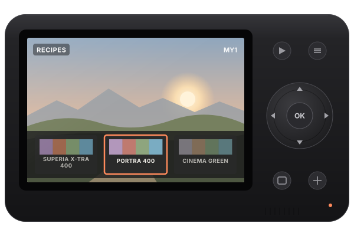

gr2_cfw adds the things the GR II never got: film recipes you can preview live and save into the MY slots, smarter Auto ISO, closer Snap distances, frame lines and zebras, and a few tools for tinkerers.
It installs like an official Ricoh update, through the camera's own menu, and it is Ricoh's firmware 3.00 underneath: everything stock keeps working, and power-on is as quick as stock.
Release zip from GitHub · read Install before you start.
Installed through the camera's own update menu
Safe boot and automatic stock fallback
Open source, MIT

What you get
Everything stock, plus more
Two new choices for the Effect button, CFW Menu and Recipes, in every menu language.
Film recipes
Film looks (Portra, Gold, Ektar, Pro 400H, Superia, UltraMax, Vision3, Cinema Green, Yellow and Warm, Vivid Slide …), a rangefinder colour look and three black-and-white looks in a filmstrip. Live view shows the look while you browse; one press saves it into MY1, MY2 or MY3, and the camera shows that look from the very first frame after power-on. Stock puts a slot back.
Four soft colour patches (magenta, red, green, cyan-blue) through each recipe's look keys. The camera's filmstrip shows the same patches, with the difference exaggerated.
Recipe files you can write
One small text file per film in cfw/recipes/: image settings, white balance, exposure, DR, NR and ISO keys, plus look keys (colour matrix, tone curves, hue sectors) on the Standard rendering. Recipe updates never need a reflash.
DEV → Export settings to card writes MY1–MY3, the My Settings Box, Setting1/Setting2 and the live settings as recipe files into cfw/export/. Nothing in the camera changes.
Auto ISO maximum and slowest shutter (also “1/60 + crop”), keep shutter at the ISO limit, Auto ISO in M, ISO Auto-High slowest shutter, and TAv fixes for the Auto-High limits.
Snap distances 0.7 m and 1.2 m; frame lines (XPan, 6×7, 4:5, 1:1, 16:9) and zebras that are never recorded; Clarity strength and custom high-ISO noise reduction.
Hold the shutter half-pressed to start stock; after two failed starts in a row the camera starts stock by itself. Ricoh's own file uninstalls it, and the boot loader and rescue mode are never touched.
Turn a .cube, .3dl or Hald CLUT into a recipe file, in your browser. The camera has no 3D-LUT stage, so the converter fits the stages it has and tells you how close it gets.
Take gr2_cfw-v<VERSION>.zip, not the -debug zip (that one is for development, see the FAQ).
Use at your own risk. Installing custom firmware can, in the worst case, leave a camera that needs the rescue procedure. Every step here was tested on a real GR II, but no warranty is given, and this project has nothing to do with Ricoh.
For the Ricoh GR II only, firmware 3.00. Not for the GR, GR III or GR IIIx.
Before you start
A full battery (the camera refuses updates on a low battery), and ideally a second one.
An SD card of 32 GB or less, formatted in the camera (MENU → Set-up → Format). Cards formatted on a computer may not be accepted.
Your camera on Ricoh's firmware 3.00 (MENU → Set-up → Confirm Firmware Version). If it shows an older version, install Ricoh's 3.00 update first, the same way as below.
Read Recovery once, so you know the key combinations before you need them.
Install
Six steps
The same path as an official Ricoh update. Afterwards, press the Effect button and the CFW Menu or the Recipes filmstrip opens.
Download and unzip
Download gr2_cfw-v<VERSION>.zip and unzip it.
Copy only the firmware file
Copy only rg2_v003.frm to the root of the freshly formatted card. On a Mac, delete the hidden ._* files afterwards (find /Volumes/<card> -name '._*' -delete). There must be no other rg2_v*.frm on the card.
Confirm Firmware Version
Put the card in the camera, switch it on, and open MENU → Set-up → Confirm Firmware Version. After a few seconds it asks Execute? with Current Version 3.00 and New Version 3.00 (installing the same version number is normal).
Choose Yes and wait
Choose Yes. The camera checks the file and rewrites the program; don't touch it until Firmware update complete. appears. Press OK; the camera switches off.
Copy your recipes
Switch on. Then copy the zip's cfw/ folder (your recipes) to the card root; you can delete rg2_v003.frm from the card now.
Assign the menus
MENU → Key Custom Options → Effect Button Setting and/or Effect Button Hold Setting → CFW Menu or Recipes. (With the mode dial on MY1–MY3 that assignment belongs to the slot: save it with the stock Save My Settings.)
Recovery
Recovery and uninstall
The CFW never changes the parts of the camera that do the recovery (its boot loader and Ricoh's rescue mode), so these always work.
Situation
What to do
Start the camera without the CFW, once
Hold the shutter half-pressed while you switch on, until the screen comes on. Or choose DEV → Boot stock once beforehand.
The camera hangs
Take the battery out, put it back, and start with the shutter half-pressed.
The CFW crashes or hangs at start
Nothing to do: after two failed starts in a row the camera starts stock by itself and stays stock.
The CFW stays off after that
Switch on with the PLAY button once (the camera starts in playback, stock). The next normal start runs the CFW again.
Uninstall
Put Ricoh's official rg2_v003.frm alone on a camera-formatted card and run Confirm Firmware Version → Yes, exactly as in Install. The camera is then 100% stock; your photos and camera settings stay.
The camera no longer starts at all
Use the rescue card (Ricoh's rg2_v003.frm plus the zip's rescue/backup.ttl): follow the steps in the README, Recovery. Never leave a card with backup.ttl in the camera.
Updating: install a newer rg2_v003.frm the same way; your settings stay. More
FAQ
Questions
Which cameras and firmware does it support?
The Ricoh GR II on firmware 3.00 only. Not the GR, GR III or GR IIIx. On an older GR II firmware, install Ricoh's 3.00 update first, the same way.
Can it brick my camera?
The CFW never changes the boot loader or Ricoh's rescue mode, and every step was tested on a real GR II. In the worst case the camera needs the rescue card from Recovery, which reinstalls the stock firmware. It is still custom firmware: use it at your own risk.
How do I start the camera stock, just once?
Hold the shutter half-pressed while you switch on, until the screen comes on, or choose DEV → Boot stock once. After two failed starts in a row the camera starts stock by itself; a power-on with the PLAY button brings the CFW back.
Where do the recipes live, and how do I add my own?
In cfw/recipes/ on the card: one ASCII text file per film, 8.3 file name, Windows line endings, at most 4 KB, up to 48 files. Add or delete files, then choose DEV → Reload recipes or restart. The looks saved in MY1–MY3 are kept inside the camera, so they work without the card. The recipe file format lists every key.
Do recipes change my RAW files?
A recipe sets the camera's image settings, white balance and its image-processing tables, which is how the camera renders live view and JPEGs. A RAW (DNG) file keeps the sensor data, so your raw converter decides how it looks.
How do I update to a new version?
Install the newer rg2_v003.frm the same way as the first time; your settings stay. New recipe files only need copying into cfw/recipes/: recipe updates never need a reflash.
What is the -debug zip?
It is for development: its loader firmware starts the CFW from the card's cfw/ folder instead, with full logging, so new builds need no reflash, only a new cfw/ folder. For using the camera, take the release zip.
What happens to my CFW settings on a stock camera?
Saved CFW choices are harmless on a stock camera: the Effect button choices simply act as “Off” (press) and “Wi-Fi” (hold). CFW Menu settings are saved inside the camera and, as a backup, in cfw/config.txt on the card.
Can I use any LUT with the converter?
The GR II has no 3D-LUT stage. The converter fits the stages the camera has (colour matrix, 12 hue sectors, tone curves, a post matrix) and shows how close it gets. Global colour and tone looks fit well; grain, halation, blur and strong colour-dependent tone changes cannot be reproduced. A converted recipe keeps the licence of its LUT.
Is this made by Ricoh?
No. This project is not affiliated with Ricoh. The firmware file in the zip contains Ricoh's firmware 3.00, which is Ricoh's property.
Credits
Credits and licences
The CFW code, this site and the LUT converter: MIT licence.
rg2_v003.frm in the release zip contains Ricoh's firmware 3.00, which is Ricoh's property and not covered by the MIT licence. Not affiliated with Ricoh, Kodak or Fujifilm; film names are used descriptively.
The film recipes are fitted to spektrafilm film simulations by Andrea Volpato: CC BY-SA 4.0.
Rangefinder and the Mono recipes are the project's own designs: CC BY 4.0.
Fonts: Inter and Barlow Condensed, SIL Open Font License 1.1 (in the firmware's overlays and on this site; licences in fonts/).
A recipe converted from a LUT is derived from that LUT and keeps the LUT's licence.